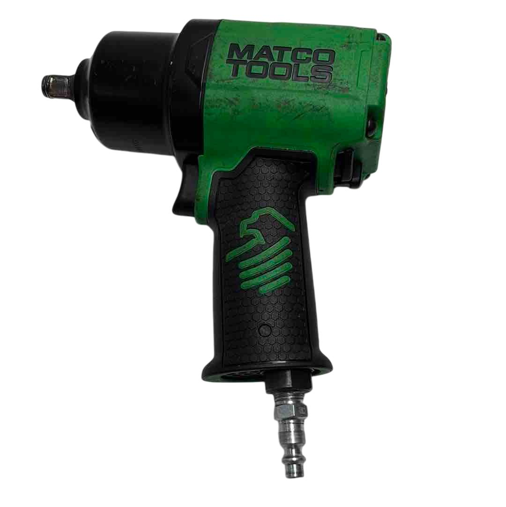

Tipo
|
Herramienta
|
Comparación de marcas Matco Tools vs. Snap-On
|
Impacto
|

1) Llave neumática de impacto de ½: La llave de impacto neumática es una herramienta potente y multifuncional
que funciona con aire comprimido
y está diseñada para apretar o aflojar tuercas, tornillos y pernos que necesitan un alto nivel de torque.
|
La llave neumática de impacto de ½ de Matco Tools y la de Snap-on son herramientas de alto rendimiento,
diseñadas para trabajos exigentes. Ambas ofrecen una gran potencia y capacidad para aflojar o apretar tuercas
y pernos de gran tamaño. La de Matco Tools destaca por su diseño ergonómico y su capacidad para trabajar en
espacios reducidos, con un mecanismo robusto y duradero.
Por su parte, la llave de Snap-on es conocida por su fiabilidad y tecnología avanzada, que también permite un
funcionamiento suave y eficiente. Aunque ambas son de calidad profesional, la de Snap-on tiende a tener un
precio más alto, reflejando su reputación en la industria. En términos de rendimiento, ambas marcas ofrecen
herramientas de gran valor, pero Snap-on suele ser preferida por algunos usuarios debido a su histórico de
durabilidad y servicio.
|
Diagnóstico Electrónico
|

2) MaxGo tablet scan 1.0: La MaxGo tablet es una herramienta de diagnóstico inalámbrica basada en Android que
ofrece cobertura OE para vehículos americanos, asiáticos y europeos. Cuenta con una pantalla táctil de 8 pulgadas
capaz de mostrar hasta ocho gráficas a la vez y acceso bidireccional a todos los módulos del vehículo para
códigos, datos en vivo y activaciones. Su diseño resistente cumple con la norma IP65, siendo a prueba de
caídas, polvo y agua.
Además, es portátil, incluye cámaras frontales y traseras de alta resolución, conexión Bluetooth Clase 1,
actualizaciones vía Wi-Fi con un solo clic y compatibilidad con Identifix.
|
La Maxgo Tablet Scan 1.0 de Matco Tools y las tabletas de diagnóstico de Snap-on, como la Solus o la Zeus,
están diseñadas para ofrecer diagnósticos avanzados en vehículos. La Maxgo se destaca por ser una opción
inalámbrica basada en Android, con buena cobertura OE para autos americanos, asiáticos y europeos, además de
ser más accesible en costo. En cambio, las tabletas Snap-on suelen ofrecer funciones más completas, como guías
de reparación integradas y
mejores capacidades de análisis bidireccional, aunque a un precio considerablemente más alto. Mientras la
Maxgo es ideal para técnicos que buscan eficiencia y portabilidad, Snap-on apunta a quienes necesitan un
nivel más profundo de diagnóstico y soporte técnico.
|
Herramientas Manuales
|

3) 88 Tooth 3/8 Inch Locking Flex Head Ratchet: La llave de carraca Matco Tools de 3/8" con cabeza flexible
bloqueable y 88 dientes está diseñada para ofrecer máxima eficiencia en espacios reducidos. Su mecanismo de 88
dientes permite un movimiento preciso con un arco de oscilación de solo 4°, ideal para trabajos en áreas de
difícil acceso. Cuenta con una cabeza flexible de 9 posiciones que se bloquea para mayor control y seguridad,
y su diseño ergonómico junto
con una longitud de 12.5 pulgadas proporciona comodidad y alcance óptimo. Fabricada con materiales duraderos,
es una herramienta confiable para profesionales automotrices.
|
La 88 Tooth 3/8" Locking Flex Head Ratchet de Matco Tools y la equivalente de Snap-on son dos herramientas
de alta calidad pensadas para trabajos en espacios reducidos. La de Matco ofrece un cabezal flexible con
bloqueo de 9 posiciones y un mecanismo de 88 dientes que permite un giro rápido y preciso, combinando
durabilidad y un precio más accesible. Por su parte, la versión de Snap-on también ofrece un diseño de cabeza
flexible y gran suavidad en el accionamiento,
destacándose por un acabado premium y una vida útil excepcional, aunque a un costo más elevado. Ambas son
excelentes opciones, pero Matco representa una alternativa más económica sin sacrificar rendimiento
profesional.
|

4) Set de llaves métricas flexibles de 8 a 25 mm: El set de llaves combinadas con mecanismo de trinquete y
cabeza flexible de Matco Tools es ideal para trabajos en espacios reducidos. Incluye medidas métricas de 8 mm
a 25 mm, excepto 20 mm y 23 mm, y cada llave tiene un mecanismo de 72 dientes que permite un giro preciso con
solo 5° de movimiento.
Su cabeza flexible mejora la maniobrabilidad en ángulos difíciles, y su construcción robusta garantiza
durabilidad y alto rendimiento, siendo una herramienta confiable para mecánicos y técnicos.
|
El set de llaves métricas flexibles de 8 a 25 mm de Matco Tools y el set similar de Snap-on son opciones
pensadas para brindar acceso y versatilidad en espacios reducidos. El juego de Matco ofrece llaves
resistentes, con cabezas flexibles y un mecanismo de matraca de 72 dientes que permite trabajar con movimientos
mínimos, todo a un precio más accesible.
El set de Snap-on, aunque similar en funcionalidad, suele ofrecer un acabado más refinado, materiales de
máxima calidad y una durabilidad superior, pero a un costo considerablemente más alto. Ambos sets son ideales
para profesionales, pero Matco representa una opción con excelente relación calidad-precio.
|

5) Alicates de sacar seguros: Los alicates de sacar seguros de Matco Tools están diseñados para instalar y
retirar anillos de retención en aplicaciones automotrices y mecánicas. Disponibles en versiones para anillos
internos y externos, ofrecen configuraciones con puntas rectas y anguladas, adaptándose a diversas
necesidades.
Fabricados en acero de alta calidad y con mangos ergonómicos, proporcionan comodidad durante su uso
prolongado. Son ideales para técnicos automotrices que requieren herramientas precisas y duraderas.
|
Los alicates de sacar seguros de Matco Tools y los de Snap-on están diseñados para instalar y retirar anillos
de retención con precisión y facilidad. Los de Matco ofrecen una construcción resistente, mangos ergonómicos y
una buena variedad de configuraciones para distintos tipos de seguros, todo a un precio accesible.
Por su parte, los alicates de Snap-on se destacan por su acabado premium, ajuste más preciso y una durabilidad
superior, pero a un costo mayor. Ambos son excelentes para uso profesional, aunque Matco es una alternativa
más económica sin sacrificar rendimiento esencial.
|
Herramientas de medición y prueba
|

6) Probador de presión gasolina: El probador de presión de combustible de Matco Tools es esencial para
diagnosticar y mantener sistemas de combustible en vehículos. Permite medir con precisión la presión del
sistema, identificando problemas como bombas defectuosas o inyectores bloqueados.
Compatible con una amplia variedad de vehículos, es una herramienta confiable y duradera para profesionales
del sector automotriz.
|
El probador de presión de gasolina de Matco Tools y el de Snap-on son herramientas confiables para diagnosticar
fallas en sistemas de combustible. El modelo de Matco ofrece mediciones precisas, buena compatibilidad con una
amplia gama de vehículos y un diseño robusto a un precio competitivo.
En cambio, el probador de Snap-on destaca por su construcción aún más refinada, mayor durabilidad y un rango
de adaptadores más amplio, aunque con un costo más elevado. Ambos cumplen con los estándares profesionales,
pero Matco ofrece una opción más accesible sin sacrificar precisión ni funcionalidad.
|